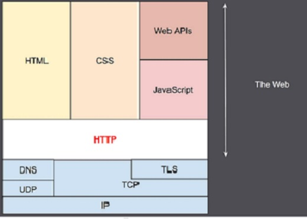

Un protocolo el cual nos permite realizar una petición de datos y recursos, como pueden ser documentos HTML. Es la base de cualquier intercambio de datos en la Web, y un protocolo de estructura cliente-servidor, esto quiere decir que una petición de datos es iniciada por el elemento que recibirá los datos (el cliente), normalmente un navegador Web.
Clientes y servidores se comunican intercambiando mensajes individuales (en contraposición a las comunicaciones que utilizan flujos continuos de datos). Los mensajes que envía el cliente, normalmente un navegador Web, se llaman peticiones, y los mensajes enviados por el servidor se llaman respuestas.

Es lo que se conoce como un protocolo de la capa de aplicación, y se transmite sobre el protocolo TCP, o el protocolo encriptado TLS, aunque teóricamente podría usarse cualquier otro protocolo fiable.
Arquitectura
Cliente:
Es cualquier herramienta que actué en representación del usuario. Esta función es realizada en la mayor parte de los casos por un navegador Web. Hay excepciones, como el caso de programas específicamente usados por desarrolladores para desarrollar y depurar sus aplicaciones.
Es cualquier herramienta que actué en representación del usuario. Esta función es realizada en la mayor parte de los casos por un navegador Web. Hay excepciones, como el caso de programas específicamente usados por desarrolladores para desarrollar y depurar sus aplicaciones.
Servidor Web:
Sirve los datos que ha pedido el cliente. Un servidor conceptualmente es una única entidad, aunque puede estar formado por varios elementos, que se reparten la carga de peticiones, que gestionan otros computadores y que generan parte o todo el documento que ha sido pedido.
Sirve los datos que ha pedido el cliente. Un servidor conceptualmente es una única entidad, aunque puede estar formado por varios elementos, que se reparten la carga de peticiones, que gestionan otros computadores y que generan parte o todo el documento que ha sido pedido.
Proxies:
Aquellos dispositivos, que sí operan procesando la capa de aplicación son conocidos como proxies. Estos pueden ser transparentes, o no y realizan varias funciones:
Aquellos dispositivos, que sí operan procesando la capa de aplicación son conocidos como proxies. Estos pueden ser transparentes, o no y realizan varias funciones:
- Caching.
- Autentificación.
- Registro de eventos.
- Balanceo de carga de peticiones.
Características
Sencillo:
HTTP está pensado y desarrollado para ser leído y fácilmente interpretado por las personas, haciendo de esta manera más fácil la depuración de errores, y reduciendo la curva de aprendizaje.
HTTP está pensado y desarrollado para ser leído y fácilmente interpretado por las personas, haciendo de esta manera más fácil la depuración de errores, y reduciendo la curva de aprendizaje.
Extensible:
Funcionalidades nuevas pueden desarrollarse, sin más que un cliente y su servidor, comprendan la misma semántica sobre las cabeceras de HTTP.
Funcionalidades nuevas pueden desarrollarse, sin más que un cliente y su servidor, comprendan la misma semántica sobre las cabeceras de HTTP.
Sin estado y con sesiones:
HTTP es un protocolo sin estado, es decir: no guarda ningún dato entre dos peticiones en la misma sesión. Usando la capacidad de ampliación del protocolo HTTP, las cookies permiten crear un contexto común para cada sesión de comunicación.
HTTP es un protocolo sin estado, es decir: no guarda ningún dato entre dos peticiones en la misma sesión. Usando la capacidad de ampliación del protocolo HTTP, las cookies permiten crear un contexto común para cada sesión de comunicación.
Conexiones:
Una conexión se gestiona al nivel de la capa de trasporte, y por tanto queda fuera del alcance del protocolo HTTP. Aún con este factor, HTTP no necesita que el protocolo que lo sustenta mantenga una conexión continua entre los participantes en la comunicación, solamente necesita que sea un protocolo fiable o que no pierda mensajes.
Una conexión se gestiona al nivel de la capa de trasporte, y por tanto queda fuera del alcance del protocolo HTTP. Aún con este factor, HTTP no necesita que el protocolo que lo sustenta mantenga una conexión continua entre los participantes en la comunicación, solamente necesita que sea un protocolo fiable o que no pierda mensajes.
Mensajes HTTP
Un mensaje HTTP (no importa si es de petición o respuesta) se compone de 3 partes:
- La primera Línea.
- Encabezados.
- Una línea en blanco.